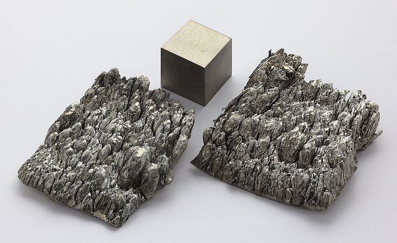

←
→
Scandium is a chemical element with symbol Sc and atomic number 21. A silvery-white metallic d-block element, it has historically been classified as a rare-earth element, together with yttrium and the lanthanides. It was discovered in 1879 by spectral analysis of the minerals euxenite and gadolinite from Scandinavia.
Scandium is present in most of the deposits of rare-earth and uranium compounds, but it is extracted from these ores in only a few mines worldwide. Because of the low availability and the difficulties in the preparation of metallic scandium, which was first done in 1937, applications for scandium were not developed until the 1970s. The positive effects of scandium on aluminium alloys were discovered in the 1970s, and its use in such alloys remains its only major application. The global trade of scandium oxide is about 10 tonnes per year.
The properties of scandium compounds are intermediate between those of aluminium and yttrium. A diagonal relationship exists between the behavior of magnesium and scandium, just as there is between beryllium and aluminium. In the chemical compounds of the elements in group 3, the predominant oxidation state is +3.